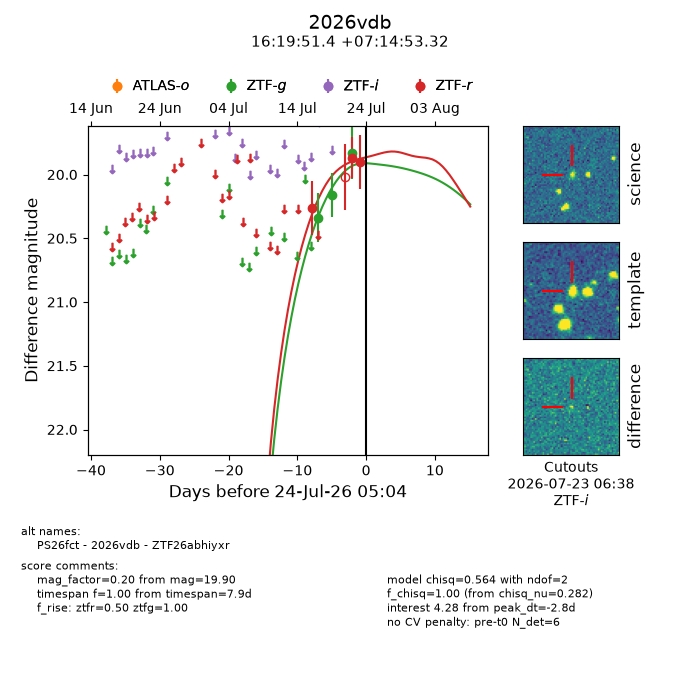
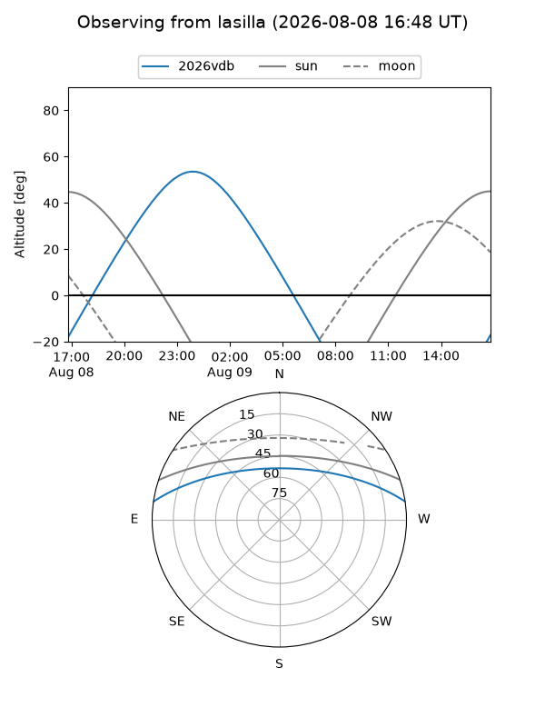
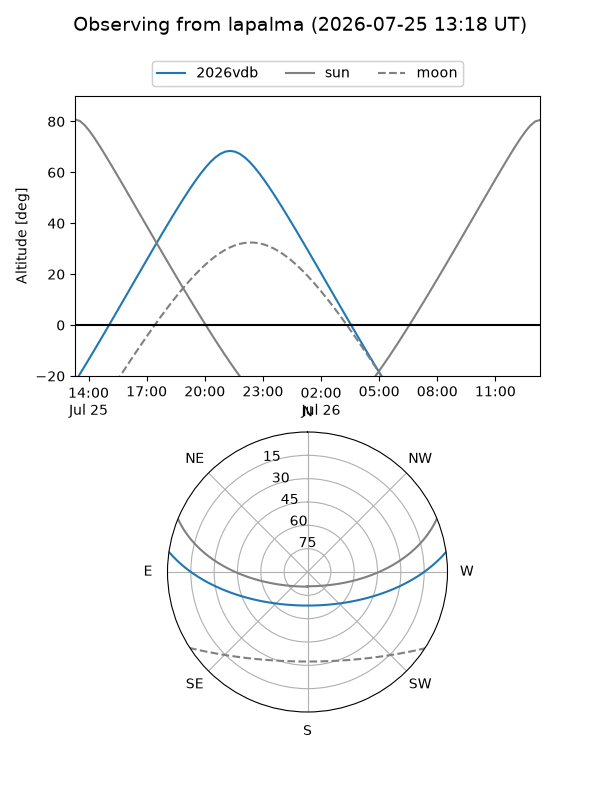
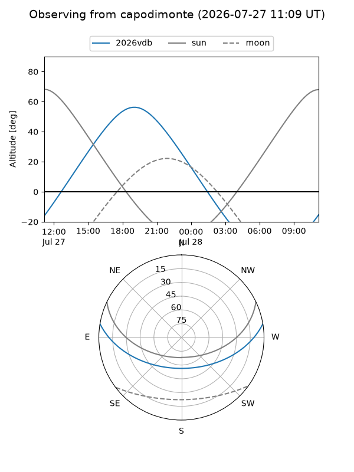
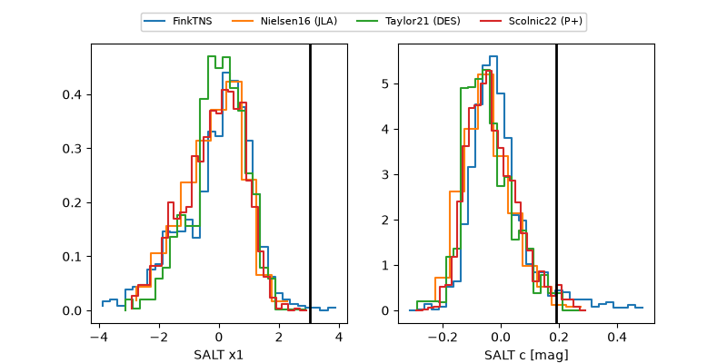

2026vdb
Target 2026vdb at 2026-07-24 05:06
Aliases and brokers:
FINK-ZTF: ztf.fink-portal.org/ZTF26abhiyxr
Lasair-ZTF: lasair-ztf.lsst.ac.uk/objects/ZTF26abhiyxr
ALeRCE-ZTF: alerce.online/object/ZTF26abhiyxr
YSE-PZ: ziggy.ucolick.org/yse/transient_detail/2026vdb
TNS name: wis-tns.org/object/2026vdb
Direct TNS query: direct search
alt names
ZTF26abhiyxr (ztf,fink_ztf)
2026vdb (tns,yse)
PS26fct (panstarrs)
Coordinates:
equatorial (ra, dec) = 244.9644,+7.24814
equatorial (HMS+DMS) = 16:19:51.45,+07:14:53.32
galactic (l, b) = (20.9913,+36.85617)
Flags:
TNS type: nan
peak dt: -2.8
Photometry:
last ztfg=19.83, ztfr=19.90
3 ztfg, 3 ztfr detections
Lightcurve

Visibility



Additional plots
